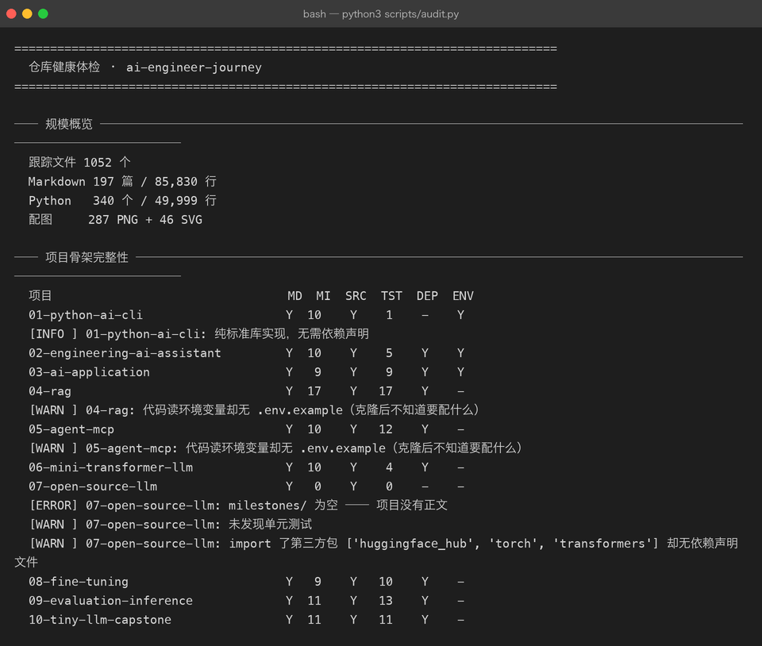
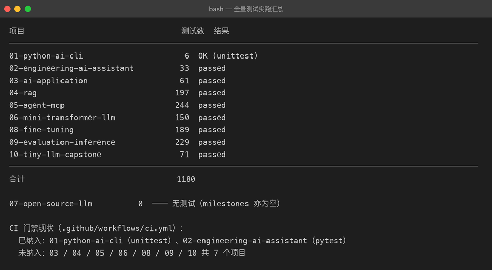
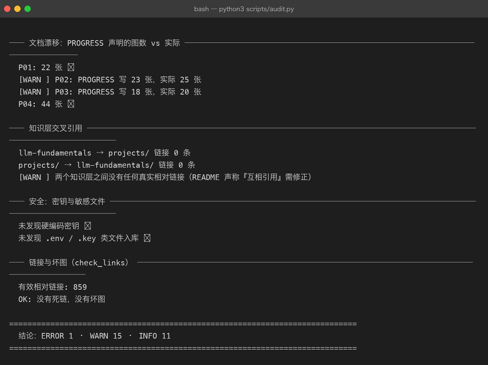
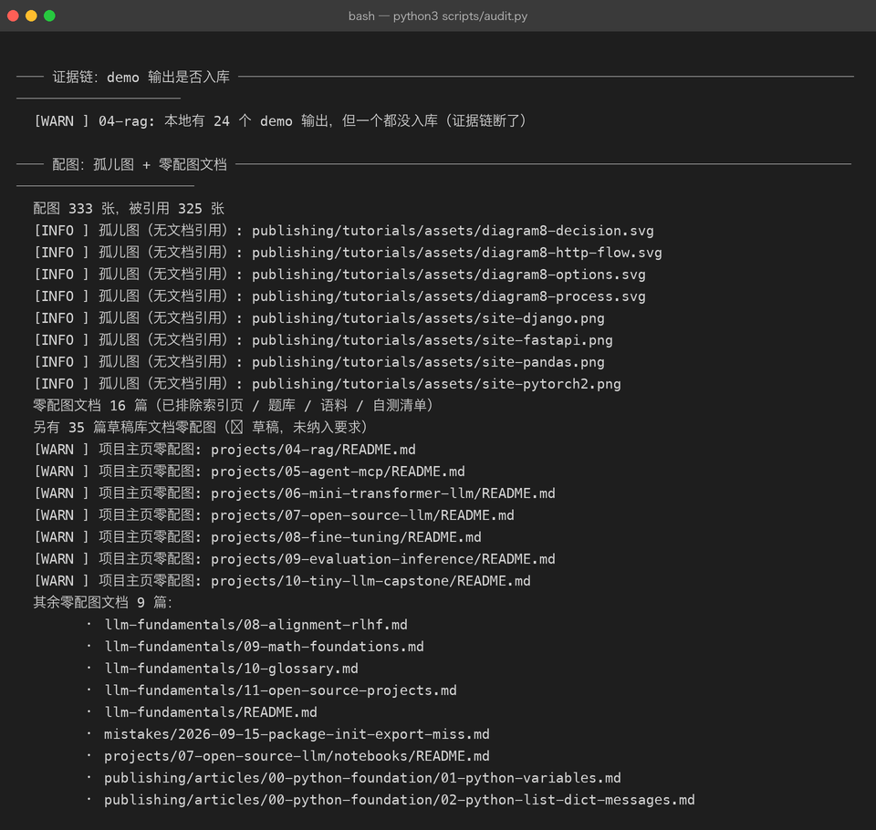

全仓库体检报告 · 2026-09-30
体检对象：
ai-engineer-journey@2014d85全部数字来自当场执行的真实命令，原始输出存档在assets/audit-run.txt与assets/tests-run.txt。口径说明：本报告描述的是
2014d85那一刻的状态。报告自身连同体检脚本一共新增了 9 个文件（2 篇文档 + 4 张截图 + 2 份原始输出 + 1 个脚本），因此把报告提交上去之后， 「跟踪文件 / Markdown / 配图 / 链接」这几个总数会比下表各多出对应的一点点。 这是审计报告的固有自指效应，不是数据失真 —— 需要最新数字时重跑scripts/audit.py即可。
0. 一句话结论
骨架是完整的，质量底线守住了，但「新克隆者能不能跑起来」和「CI 到底守住了什么」这两件事上没有对齐。
- 守住的部分：1180 项测试全绿、859 条相对链接零死链、零硬编码密钥、333 张配图里 325 张有引用（无占位图、无来源不明图片）。
- 没对齐的部分：1 个阻断级缺口（P07 无正文）、3 项会让复现失败的欠账（CI 只门禁 2/10 项目、P04/P05 无
.env.example、P04 证据链未入库），外加 11 项文档漂移与规范漂移。
体检结论：ERROR 1 · WARN 15 · INFO 11。
1. 体检方法（可复现）
python3 scripts/audit.py --quick # 8 项检查：规模 / 骨架 / 证据链 / 配图 / 漂移 / 交叉引用 / 密钥
python3 scripts/audit.py --tests # 额外实跑全部项目测试（约 85 秒）
上图这一屏就把问题暴露出来了：07-open-source-llm 的 MI（milestone 数）是 0，而 04-rag / 05-agent-mcp 的 ENV 列是空的。
写体检工具时踩到的一个坑，值得单独记一句：孤儿图检测最初扫描仓库里所有文本文件。 结果本报告的归档
assets/audit-run.txt里原样抄了一遍[INFO] 孤儿图: .../site-pandas.png， 工具就把这行当成了「该图被引用」，8 个孤儿图瞬间全部消失。 修法：引用来源只扫.md / .html / .py / .yml / .json / .ipynb，不扫.txt。 教训——观测工具的输出一旦进了被观测范围，就会污染观测结果；这类自指污染不会报错，只会让数字悄悄变好看。
2. 现状盘点
2.1 规模
| 项 | 数量 |
|---|---|
| git 跟踪文件 | 1,052 |
| Markdown | 197 篇 / 85,830 行 |
| Python | 340 个 / 49,999 行 |
| 配图 | 287 PNG + 46 SVG |
2.2 项目矩阵（Y 表示齐备，- 表示缺失）
| 项目 | README | Milestones | src | 测试数 | 依赖声明 | .env.example |
|---|---|---|---|---|---|---|
| 01-python-ai-cli | Y | 10 | Y | 6 | 不需要¹ | Y |
| 02-engineering-ai-assistant | Y | 10 | Y | 33 | Y | Y |
| 03-ai-application | Y | 9 | Y | 61 | Y | Y |
| 04-rag | Y | 17 | Y | 197 | Y | - |
| 05-agent-mcp | Y | 10 | Y | 244 | Y | - |
| 06-mini-transformer-llm | Y | 10 | Y | 150 | Y | 不需要² |
| 07-open-source-llm | Y | 0 | Y | 0 | - | 不需要³ |
| 08-fine-tuning | Y | 9 | Y | 189 | Y | 不需要² |
| 09-evaluation-inference | Y | 11 | Y | 229 | Y | 不需要² |
| 10-tiny-llm-capstone | Y | 11 | Y | 71 | Y | 不需要² |
¹ P01 是纯标准库教学项目（import 只有 pkgdemo 等本地包），按 CONTRIBUTING §4「v0.1 允许零依赖标准库实现」豁免。 ² P06 / P08 / P09 / P10 走纯 numpy 手写路线，不调外部 API，因此没有 Key 需求。 ³ P07 的 pipelines/ 需要 DEEPSEEK_API_KEY，但确实没有 .env.example —— 见 §3 第 3 条。
2.3 测试实跑（1180 项，全绿）

合计 1180 项全绿，0 failed。这个数字值得单独强调：它是本仓库最硬的质量资产。
表末两行是本期人工补充的 CI 现状说明，不是工具输出。同一批数字已用
python3 scripts/audit.py --tests独立复跑一次核对（87 秒，逐项一致，全部通过 ✓）， 所以结论不依赖某个临时脚本。
2.4 安全与链接基线

这一屏是全仓库最让人放心的部分：零硬编码密钥、零 .env/.key 入库、859 条相对链接零死链零坏图。 check_links.py --strict 也挂在 CI 上，属于「已经守住、不需要额外投入」的底线。
3. 发现清单
P0 — 阻断级（1 项）
3.1 projects/07-open-source-llm/milestones/ 为空
- 现象：目录存在但 0 个
.md。ROADMAP 承诺 9 个 Milestone，实际一条正文都没有。 - 不是偷懒，是被资源卡住：本机 M1 磁盘余量 ~15 GB，而 Qwen2.5-7B 的 bf16 权重就要 14.18 GiB。项目已拆成两条线，
pipelines/那条（调用 / 参数 / 显存账本）已真实跑通并产出 6 张终端截图，notebooks/那条在等 Colab GPU。 - 后果：这是全仓库唯一的
ERROR。它让 ROADMAP 里「9 个 Milestone」的进度表（✅/🔶/⬜）失去正文支撑 —— 读者点进去是空的。同时它也是唯一没有单元测试的项目，而 P07 的pipelines/llm_client/是有真实逻辑的（参数账本、KV Cache 估算、usage 守恒校验）。 - 建议（两条路，推荐先做 B）：
- A（等资源）：等你在 Colab 跑完
p07_colab.ipynb/p07_finetune_java_interview.ipynb，回收输出后再写 milestone。缺点：无限期挂起，且 P07 会一直是仓库里唯一没有正文的项目。 - B（推荐，立即可做）：把
pipelines/已跑通的 6 条线直接落成 6 篇 milestone 正文（M01 调用 / M02 流式 / M03 生成参数 / M04 参数量对账 / M05 显存账本 / M06 Java 面试助手应用），把剩下 3 条（HF 生态 / BPE 细节 / 量化）在正文里明确标注为「待 GPU 资源，当前不可复现」。这样 P07 从「🔴 空目录」变成「🟡 6/9 文档就绪、3/9 明确挂起」，ROADMAP 的进度表才立得住。 - 顺带：给
pipelines/llm_client/补最小单测（参数账本与 usage 守恒都是纯算术，不需要网络即可断言），补上pyproject.toml。
- A（等资源）：等你在 Colab 跑完
P1 — 影响复现（3 项）
3.2 CI 只门禁 2/10 个项目：1180 项测试里只有 39 项被 CI 跑
- 现象：
.github/workflows/ci.yml只跑01-python-ai-cli（unittest 6 项）与02-engineering-ai-assistant（pytest 33 项）。3 / 4 / 5 / 6 / 8 / 9 / 10 共 7 个项目、1141 项测试完全不进 CI。 - 风险：CI 流水线显示绿色，容易被读成「全仓库健康」，实际它只覆盖了 3.3% 的测试。本仓库所有项目都刻意做到了离线可跑（Fake/InMemory 客户端 + 真实链路分离），所以加进去没有技术障碍。单次耗时也很可控：P08 最慢，34.8 s。
- 建议：在
ci.yml里按working-directory逐个补 step。P01/P02 步骤保留，新增 7 个。若担心总时长，可用matrix并行，或把 P08 单独放一个 job。验收：GitHub Actions 一次运行能打印出 1180 项测试结果。
3.3 P04 / P05 没有 .env.example，README 也没说要配什么
- 现象：两个项目的代码都读外部凭据（
DASHSCOPE_API_KEY、DEEPSEEK_API_KEY），但仓库里既没有.env.example，项目 README 里也一个字都没提环境准备。 - 对比：P01 / P02 / P03 都有规范的
.env.example（内含your-api-key-here占位 +DEEPSEEK_BASE_URL等）。 - 后果：新克隆者跑 P04 的 embedding 链路会直接拿到 KeyError/401，且不知道要去哪配。这也是 CONTRIBUTING §4 明写的要求（「引入第三方库时同步给
requirements.txt+.env.example」）。 - 建议：补两个
.env.example（DASHSCOPE_API_KEY/DASHSCOPE_BASE_URL、DEEPSEEK_API_KEY/DEEPSEEK_BASE_URL/DEFAULT_MODEL），并在两个 README 加一节「环境准备」。验收：git ls-files | grep env.example能列出 5 个项目。
3.4 P04 的 demo 输出全部未入库，证据链与其余 9 个项目不一致
- 现象：
projects/04-rag/.gitignore里有一行demos/out/，导致本地 24 个输出文件一个都没入库；而 01 / 02 / 03 / 05 / 06 / 07 / 08 / 09 / 10 全部入库（P05 入库 14 个、P01 9 个……）。 - 后果：P04 文档里引用的实测数字（
recall@1 87.5%、阈值校准曲线等）在克隆后的仓库里无法被复核，也无法重渲染截图。这与 P10 确立的原则直接冲突：「demos/out/*_terminal.txt必须入库，它是文档里所有数字的唯一来源」。 - 建议：二选一并写进 CONTRIBUTING，不要两套政策并存。推荐改成与其余项目一致（删掉那行 ignore、把 24 个输出入库），因为 P04 是本仓库图最多的项目（44 张），证据权重最高。验收：
git ls-files projects/04-rag | grep -c 'demos/out/'大于 0。
P2 — 文档漂移（按 CONTRIBUTING §5，这些「视为 bug」）
| # | 位置 | 声称 | 实际 |
|---|---|---|---|
| 3.5 | PROGRESS.md Project 02 行 | assets 共 23 张 | 25 张 |
| 3.6 | PROGRESS.md Project 03 行 | assets 共 18 张 | 20 张 |
| 3.7 | README.md 结构树第 75 行 | exercises/ # 01-basic 已有题，02/03/04 待播种 | 4 个目录都已播种（各 2 个文件） |
| 3.8 | projects/07-open-source-llm/pipelines/README.md | 3 处引用 workflows/ 目录（第 5 / 16 / 266 行） | 该目录不存在（ls 报 No such file） |
| 3.9 | README.md §基础知识层 + ROADMAP.md 附节 | 「两者互相引用，不重复正文」 | 双向真实相对链接 0 条（llm-fundamentals → projects/ 0，反向 0） |
| 3.10 | CONTRIBUTING.md §1 | 「所有知识只维护在 projects/*/milestones/」；禁止清单含 curriculum/ labs/ knowledge/ assessments/ | llm-fundamentals/ 是事实上的第二棵知识树，不在豁免清单里，措辞与之直接冲突 |
| 3.11 | CONTRIBUTING.md §6 | 「是否推送由维护者当场决定；未明确授权时不推送」 | 实际执行的是 origin + gitee 双推，两者矛盾 |
| 3.12 | CONTRIBUTING.md §6 | 「里程碑打 tag」 | git tag 0 个 |
建议：3.5–3.9 是纯修数字/改措辞，一次提交可清完；3.10 / 3.11 需要在 CONTRIBUTING 里补第 3 条豁免（把 llm-fundamentals/ 写成「已批准的例外：理论层只讲为什么，不复制 milestone 正文」）并重写推送条款；3.12 要么给已完成的 P08/P09/P10 补 tag，要么把这条规则删掉（规则写了不执行，比没写更有害，因为后来者会以为它在执行）。
P3 — 资产与规范（6 项）
3.13 7 个项目主页零配图
projects/{04-rag, 05-agent-mcp, 06-mini-transformer-llm, 07-open-source-llm, 08-fine-tuning, 09-evaluation-inference, 10-tiny-llm-capstone}/README.md 一篇图都没有。这 7 个恰好是最"重"的项目。项目主页是读者进入任何项目的第一落点，而仓库的硬约定是「所有文档必须配图」。
建议：每个主页补 1 张——优先复用已有资产里的架构图 SVG（P06–P10 各有 9–11 张手写 SVG），或用现成的终端截图拼一张 montage。不要新造图，避免又产生一批没人引用的孤儿图。

3.14 4 张无人引用的网站截图（约 833 KB）
site-django.png 56 KB、site-fastapi.png 124 KB、site-pandas.png 116 KB、site-pytorch2.png 537 KB —— git grep 全仓库零命中。建议：确认是否留给后续文章；若无用途则删除。不建议直接删，先确认。
3.15 4 个 diagram8-*.svg 不是孤儿，但容易被误删
它们与同名 .png 成对存在（diagram8-decision.svg ↔ .png），是渲染 PNG 前保留的矢量源文件。体检脚本把它们标为「未被引用」，实际是有意保留。建议：在 publishing/tutorials/README.md 的「配图规范」里补一行「SVG 矢量源文件与 PNG 成品并存，不入引用表」，否则下一轮体检或清理时大概率被当垃圾删掉。
3.16 配图命名规范漂移
CONTRIBUTING §2 规定配图前缀为 site-* / term-* / colab-* / diagram-*。实际：
llm-fundamentals/assets/：attention-heatmap.png、kv-cache-memory.png、positional-encoding.png、scaling-law.png、softmax-temperature.png、lora-params.png—— 6 张全部无前缀。projects/06–10/assets/*.svg：描述性命名（如model-serving.svg），亦无前缀。
建议：与其强行改名（会产生大量链接变更风险），不如放宽规范：在 CONTRIBUTING §2 补一句「教学用示意图允许描述性命名，但同一目录内必须唯一且格式统一」。规范要服务一致性，不是制造改造工作量。
3.17 错题本几乎空着
mistakes/ 只有 1 条记录（2026-09-15）。而实际踩过的坑远不止一个——仅在项目工作日志里就能捞出几十条，例如：
- P06 的
Tensor.__init__把_backward设成实例属性，遮蔽子类同名方法 → 梯度校验静默返回 1.0、loss 不降且不报错（最阴的一类静默失败） - P06 的
Module.parameters()漏掉整个词嵌入（TokenEmbedding未继承Module）→ 少算 65,536 参数 - P06 的 Adam 动量从未累积（
step()里 m/v 是局部变量） - ASCII 双引号内嵌中文引号 → Python
SyntaxError（llm-fundamentals 4 个脚本同时中招） - macOS 的
HTTP_PROXY拦截 localhost → 本地服务测不通
mistakes/README.md 自己写着「教程让人看懂，错误记录让人真正掌握」。这是 Track 1（我是否真的学会）的一部分，但它现在是空的。 建议：先补 5 条最有价值的（上面前三条 + 中文引号 + HTTP_PROXY），每条按既定 7 段式写。
3.18 只有 2/10 个项目有自测清单，Track 1 无法执行
PROGRESS 把「学习进度」列为 Track 1 并声明「文档就绪 ≠ 已掌握」，判定规则是「做完题 → 能讲清为什么 → 才由你本人打勾」。但：
LEARNING.md（自测清单）只有 P02、P03 有。exercises/（题库）只有 P01、P02、P03 有。
也就是说，P04–P10 这 7 个项目（占仓库 63% 的里程碑、最多的代码）根本没有自测手段，Track 1 对它们完全是空转。
建议：这是本报告里对你的学习收益 highest-leverage 的一项。不必一次做满 7 个，建议按「你已经学完哪个就补哪个」的顺序，每个项目先做 10 道判断题 + 5 道动手题（P02/P03 的 LEARNING.md 已有成熟模板可复制）。验收：PROGRESS 的 Track 1 表格里，7 个「⬜ 未开始」至少有 1 个能开始。
4. 补充建议清单（可直接照着做）
按「先修会误导人的，再修会拦住人的，最后修锦上添花的」排序。
| 序 | 事项 | 动作 | 验收标准 | 量级 |
|---|---|---|---|---|
| 1 | P07 无正文（P0） | 把 pipelines/ 已跑通的 6 条线落成 6 篇 milestone，其余 3 条标注「待 GPU」 | ls projects/07-open-source-llm/milestones/*.md ≥ 6 | 中 |
| 2 | CI 形同虚设（P1） | ci.yml 补 7 个项目的 pytest step | Actions 日志能见到 1180 项测试 | 小 |
| 3 | 文档漂移 3.5–3.9 | 改 2 处数字、1 处结构树描述、3 处 workflows/ 引用、交叉引用措辞 | python3 scripts/audit.py 的 WARN 减少 5 条 | 小 |
| 4 | P04/P05 无法复现（P1） | 补 2 个 .env.example + 2 段「环境准备」 | git ls-files \| grep -c env.example = 5 | 小 |
| 5 | P04 证据链（P1） | 取消 demos/out/ 忽略、24 个输出入库 | P04 输出入库数 > 0 | 小 |
| 6 | CONTRIBUTING 与现实冲突 3.10–3.12 | 补 llm-fundamentals 豁免条款、重写推送条款、给 P08–P10 补 tag（或删掉该规则） | 规则与实际一致，无「写了不执行」的条款 | 小 |
| 7 | 项目主页零配图 3.13 | 7 个主页各配 1 张（优先复用已有 SVG/截图） | audit 的「项目主页零配图」WARN 归零 | 中 |
| 8 | 错题本空置 3.17 | 补 5 条真实踩坑记录 | ls mistakes/*.md \| wc -l ≥ 6 | 中 |
| 9 | Track 1 空转 3.18 | 按已学进度，给 P04–P10 补 LEARNING.md + 题 | Track 1 至少有 3 个项目能开始 | 大（但收益最高） |
| 10 | 资产清理 3.14 / 3.15 / 3.16 | 确认 4 张无用截图后再删；补 SVG 源文件说明；放宽命名规范 | audit 的 INFO 项有明确处置意见 | 小 |
5. 不建议做的事
- 不要把
llm-fundamentals/合并进projects/。两者定位不同（理论层 vs 实践层），合并成本高且会让 milestone 正文变成大杂烩。正确解法是补交叉引用（建议：llm-fundamentals 每章末尾加一行「对应实践项目」，同时给 P06/P08/P10 的 README 加一行「理论背景见 llm-fundamentals 第 N 章」）。 - 不要为了统一命名规范去批量重命名配图。333 张图里任何一次改名都要同步文档引用，风险远大于收益。放宽规范即可。
- 不要直接删那 4 张
site-*.png。先确认没有留给后续文章，再走删除流程。
附：复现本期体检
cd ai-engineer-journey
python3 scripts/audit.py > audit/assets/audit-run.txt # 体检（本报告 §1/§3 的证据）
python3 scripts/audit.py --tests | tail -16 | tee audit/assets/tests-run.txt # 全量测试（§2.3）
python3 scripts/check_links.py --strict # 死链坏图截图渲染（需要带 Pillow 的解释器）：
P=/Users/beiluo/.workbuddy/binaries/python/envs/default/bin/python
$P scripts/render_terminal.py <(sed -n '1,28p' audit/assets/audit-run.txt) \
--out audit/assets/audit-01-skeleton.png --title "bash — python3 scripts/audit.py"